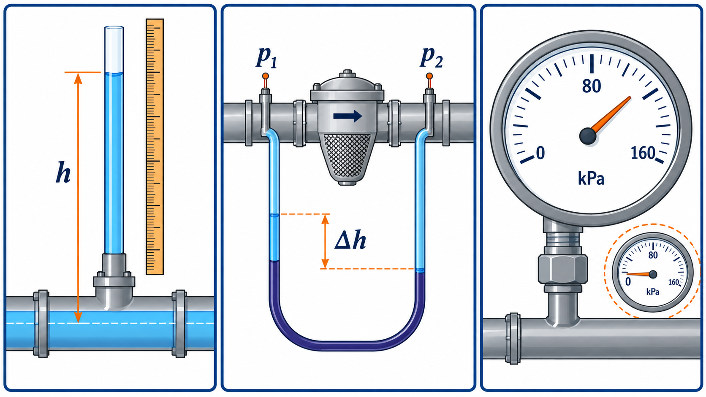

Tema 1.3. Cómo medir la presión del agua
Unidad 1 · Hidrostática aplicada a la Agronomía
Empezamos desde cero
No necesitas haber estudiado hidráulica. En este tema aprenderás a observar el agua, traducir la observación a un esquema, elegir una ecuación, conservar las unidades y explicar qué significa el resultado para una instalación agrícola.
Convenciones de trabajo. Usaremos agua a temperatura ambiente con densidad aproximada y , salvo que el problema indique otro valor. Diferenciaremos presión absoluta y manométrica.
Ruta de aprendizaje
- Situación agrícola y pregunta guía.
- Explicación física con palabras sencillas.
- Esquema y vocabulario visual.
- Modelo matemático, unidades y supuestos.
- Ejemplos resueltos paso a paso.
- Práctica guiada e independiente.
- Interpretación agronómica y autoevaluación.
1. Situación agrícola: diagnosticar un filtro
Un sistema de riego tiene un manómetro antes y otro después del filtro. La lectura aguas arriba es 210 kPa y la de salida 182 kPa. La diferencia informa cuánto “cuesta” atravesar el filtro en la condición de operación observada.
Si el filtro se obstruye progresivamente, ¿qué esperas que ocurra con la diferencia de presión? ¿Basta una sola lectura para decidir limpiar?


2. Medir es comparar
Un instrumento transforma la presión en una indicación observable: altura de columna, deformación de un elemento elástico o señal eléctrica. Toda lectura necesita referencia, unidad, rango y estado del equipo.
| Instrumento | Qué muestra | Ventaja | Limitación típica |
|---|---|---|---|
| Piezómetro | altura de agua | simple y visible | solo presiones positivas moderadas |
| Tubo U | diferencia de niveles | muy didáctico | montaje y lectura cuidadosos |
| Bourdon | deformación mecánica | robusto en campo | resolución y calibración limitan |
| Sensor electrónico | señal proporcional | registro continuo | requiere alimentación y verificación |
3. Del nivel a la presión
Para un piezómetro abierto conectado a agua:
Para un manómetro diferencial simple con fluido manométrico de densidad , puntos a la misma elevación y agua en la línea:
Si los puntos no están a la misma elevación o hay varios fluidos, conviene hacer un recorrido de presiones.
4. Algoritmo del recorrido manométrico
- Marca un punto de presión conocida.
- Avanza por la columna: al bajar en un fluido suma .
- Al subir resta .
- En una misma interfaz la presión es continua.
- Llega al punto desconocido, escribe la ecuación y despeja.
- Verifica el signo con una predicción física.
5. Leer bien un manómetro de carátula
Antes de anotar:
- confirma unidad y rango;
- verifica que el cero sea razonable sin presión;
- mira perpendicularmente para evitar paralaje;
- espera que la aguja se estabilice;
- registra lugar, fecha, condición de la bomba y caudal si está disponible;
- nunca excedas el rango ni retires un instrumento presurizado.
Resolución es el menor incremento que puede distinguirse. Exactitud es cercanía al valor verdadero. Calibración compara el instrumento con una referencia trazable. No son sinónimos.
6. Ejemplo resuelto A: piezómetro
Un piezómetro conectado a una línea de agua estabiliza su nivel 1.35 m por encima del punto de conexión.
.
Comprobación: la altura es positiva, por lo que la presión manométrica es positiva.
Interpretación: la línea tiene 1.35 m de carga de presión estática en ese punto.
7. Ejemplo resuelto B: tubo U con fluido seguro
Dos puntos a igual elevación están conectados a un tubo U con líquido manométrico de . La diferencia de niveles es 0.32 m.
.
El valor es pequeño porque las densidades son cercanas. Un líquido más denso produciría menor diferencia de altura para la misma presión. Para prácticas docentes use agua coloreada o soluciones seguras; no se requiere mercurio.
8. Ejemplo resuelto C: pérdida observada en un filtro
Datos: entrada 210 kPa; salida 182 kPa.
En metros de agua: m.
Interpretación: la diferencia es un indicador operativo. La decisión de limpieza debe compararse con la recomendación del fabricante y con una línea base tomada con el filtro limpio y caudal comparable.
9. Incertidumbre básica
Si cada manómetro tiene incertidumbre aproximada de ±2 kPa e independientes, la incertidumbre combinada de la diferencia puede estimarse por:
Por eso no conviene interpretar como cambio real una variación menor que la capacidad de medición del conjunto.
10. Práctica: banco de presión con agua
Propósito: relacionar altura de columna, presión calculada y lectura instrumental.
Materiales: manguera transparente, tabla con escala, agua coloreada alimentaria, conexiones, recipiente y manómetro de baja presión opcional.
Seguridad: equipo despresurizado al conectar; protección ocular; piso seco; sin mercurio.
Procedimiento: monta piezómetro vertical; aplica tres alturas; registra ; calcula ; si hay manómetro, compara; repite y estima dispersión.
Tabla mínima: ensayo, altura, presión calculada, lectura del instrumento, diferencia, observaciones.
Interpretación: separa diferencia sistemática (cero/calibración) de fluctuación aleatoria.
11. Errores frecuentes
- Restar lecturas sin identificar cuál es entrada y cuál salida.
- Comparar diferencias medidas a caudales muy distintos.
- Reportar más decimales que la resolución permite.
- Omitir unidad, rango o condición de operación.
- Decidir mantenimiento con un umbral genérico sin consultar el equipo específico.
12. Ejercicios graduados
- Convierte 2.20 m de columna de agua a kPa.
- Un filtro marca 240 kPa a la entrada y 205 kPa a la salida. Calcula en kPa, bar y m de agua.
- Un manómetro de 0 a 600 kPa tiene divisiones de 10 kPa. ¿Es razonable reportar 183.7 kPa? Justifica.
- Ordena los pasos seguros para retirar un manómetro.
- Diseña una hoja de campo con seis variables indispensables para comparar el desempeño del filtro durante una semana.
Respuestas para autoestudio
- 21.55 kPa. 2. 35 kPa; 0.35 bar; 3.58 m. 3. No: la lectura no respalda décimas de kPa. 4. Detener/aislar, despresurizar, verificar cero, retirar. 5. Fecha-hora, ubicación, presión entrada, presión salida, caudal/estado de bomba, observaciones de limpieza; se aceptan equivalentes justificados.
13. Comprobación final
Referencias y ampliación
- U.S. Department of Agriculture, Natural Resources Conservation Service. National Engineering Handbook, Part 652: Irrigation Guide. https://www.nrcs.usda.gov/sites/default/files/2022-08/PA%20Irrigation%20Guide.pdf
- Food and Agriculture Organization of the United Nations. Pressurized Irrigation Techniques. https://www.fao.org/4/a1336e/a1336e00.htm
- U.S. Bureau of Reclamation. Design Standards. https://www.usbr.gov/tsc/techreferences/designstandards-datacollectionguides/designstandards.html
- OpenStax. University Physics, Volume 1: Pascal’s Principle and Hydraulics. https://openstax.org/books/university-physics-volume-1/pages/14-3-pascals-principle-and-hydraulics
Nota didáctica: los parámetros numéricos de ejemplos son datos de aprendizaje. Para seleccionar, operar o mantener equipo real deben consultarse el fabricante, las normas aplicables y las condiciones del sitio.